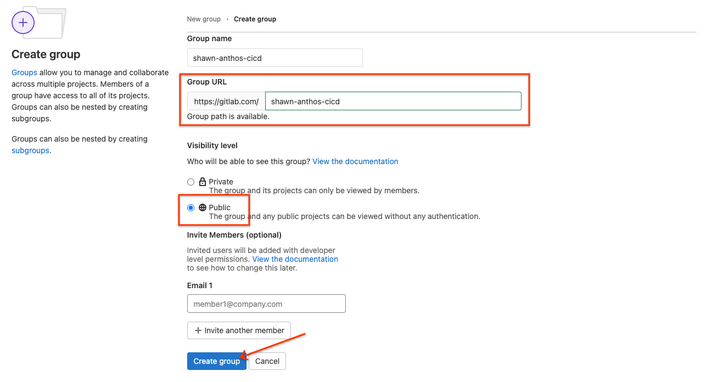
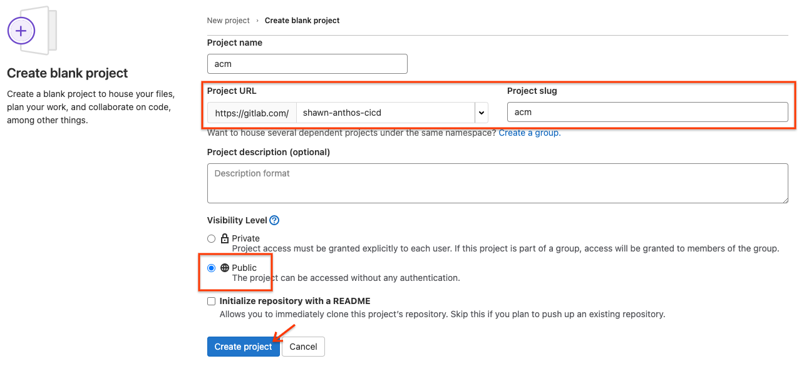

このラボでは Anthos と GitLab.com を使ったモダンな CI/CD パイプラインの構築を学びます。
ラボを実施するためのプロジェクトを作成してください。 また、そのプロジェクトに有効なビリングアカウントをリンクしてください。
このラボでは GitLab.com を利用します。
もしアカウントを持っていない場合はサインアップしてください。 また、SSH鍵でのアクセスを設定していない場合はSSH鍵ペアを作成して GitLab.com に登録してください。
適当な名前の新しいパブリックグループを作成してください。 作成したグループに割り当てられたURLをメモしておいてください。 今後、このラボで作成されるリポジトリはすべてこのグループ内に作成されます。

Google Cloud SDK (gcloud) をインストールしていない場合はドキュメントに従ってインストールしてください。
必要なコンポーネントをインストールしてください。
gcloud components install alpha beta kubectl nomos
macOSとLinuxでは追加でnomosに対して以下の操作を行ってください。
nomos バイナリをパスの通ったディレクトリに移動 mv /path/to/nomos /usr/local/bin/nomosnomos バイナリに実行権を付与 chmod +x /usr/local/bin/nomos使用するプロジェクトを設定してください。
gcloud config set project YOUR-PROJECT
利用する Google Cloud の API を有効化してください。
gcloud services enable \ anthos.googleapis.com \ anthosgke.googleapis.com \ anthosaudit.googleapis.com \ binaryauthorization.googleapis.com \ cloudbuild.googleapis.com \ containerscanning.googleapis.com \ cloudresourcemanager.googleapis.com \ container.googleapis.com \ gkeconnect.googleapis.com \ gkehub.googleapis.com \ serviceusage.googleapis.com \ stackdriver.googleapis.com \ monitoring.googleapis.com \ logging.googleapis.com
以下の環境変数を設定してください。
export GROUP_NAME="<your gitlab group name>"
export PROJECT_ID="$(gcloud config get-value project)"
export PROJECT_NUMBER="$(gcloud projects describe "${PROJECT_ID}" --format='value(projectNumber)')"
export USER="<user email you are using>"
export GROUP_URI="<your gitlab group URI>"
export REGION="us-central1"
export ZONE="asia-northeast1-c"
このラボではdevとprodという2つのGKEクラスタを作成します。 devクラスタは開発環境やテスト環境として利用するクラスタです。 prodクラスタは本番環境として利用します。
devクラスタを作成してください。
gcloud container clusters create dev \ --workload-pool=$(gcloud config get-value project).svc.id.goog \ --machine-type e2-standard-4 \ --zone asia-northeast1-c \ --labels environment=dev
prodクラスタを作成してください。
gcloud container clusters create prod \ --workload-pool=$(gcloud config get-value project).svc.id.goog \ --machine-type e2-standard-4 \ --zone asia-northeast1-c \ --labels environment=prod
操作しているユーザーに必要な権限を付与します。
gcloud projects add-iam-policy-binding \ $(gcloud config get-value project) \ --member user:$(gcloud config get-value account) \ --role roles/gkehub.admin \ --role roles/iam.serviceAccountAdmin \ --role roles/iam.serviceAccountKeyAdmin \ --role roles/resourcemanager.projectIamAdmin
作成したGKEクラスタをAnthosへ登録します。
devクラスタを登録してください。
gcloud beta container hub memberships register dev \ --gke-uri $(gcloud container clusters list --uri | grep dev) \ --enable-workload-identity
prodクラスタを登録してください。
gcloud beta container hub memberships register prod \ --gke-uri $(gcloud container clusters list --uri | grep prod) \ --enable-workload-identity
登録されたことを確認してください。
gcloud beta container hub memberships list
Anthos Config Management (ACM) は Anthos の主要コンポーネントのひとつです。 Anthos Config Management ではカスタムポリシーを含む設定を定義し、オンプレやマルチクラウドでその設定を適用することができます。
Anthos Config Management では設定やポリシーをGitリポジトリで管理できます。 典型的にはこのリポジトリは運用チームやセキュリティチームで管理します。 このラボで紹介するリポジトリモデルを使うと、開発者はアプリケーションの開発用のリポジトリで開発に専念して、運用チームやセキュリティチームはインフラに専念することができます。 クラスタがAnthos Config Managementリポジトリと同期している限り、Anthos Config Managementリポジトリ以外を使った方法での変更はできません。 これにより、構成を作成・変更する際にバージョン管理システムに伴うすべての利点を活用できます。
Anthos Config Managementを有効化してください。
gcloud alpha container hub config-management enable
作成したGitLab.comのパグリックグループに新しくacmというパブリックプロジェクトを作成してください。

作成した空のリポジトリをクローンしてConfig Sync用に初期化してください。
cd ~ mkdir $GROUP_NAME cd $GROUP_NAME git clone git@gitlab.com:$GROUP_NAME/acm.git cd acm git switch -c main nomos init
次のようなディレクトリとファイルが作成されます。
.
├── README.md
├── cluster
├── clusterregistry
├── namespaces
└── system
├── README.md
└── repo.yaml
Config Sync OperatorはKubernetesクラスタにConfig Syncの機能を提供するOperatorです。
Operatorのマニフェストファイルをダウンロードしてください。
cd ~/$GROUP_NAME/acm mkdir setup cd setup gsutil cp gs://config-management-release/released/latest/config-management-operator.yaml config-management-operator.yaml
ダウンロードしたマニフェストを適用してConfig Sync Operatorをdevクラスタとprodクラスタにデプロイしてください。
gcloud container clusters get-credentials dev --zone asia-northeast1-c kubectl apply -f config-management-operator.yaml gcloud container clusters get-credentials prod --zone asia-northeast1-c kubectl apply -f config-management-operator.yaml
それぞれのクラスタに対して、Config Syncの設定ファイルを作成します。
setupディレクトリに移動してください。
cd ~/$GROUP_NAME/acm
devクラスタ用にdevブランチを同期対象とする config-management-dev.yaml を作成してください。
cd ~/$GROUP_NAME/acm/setup
cat > config-management-dev.yaml << EOF
apiVersion: configmanagement.gke.io/v1
kind: ConfigManagement
metadata:
name: config-management
spec:
clusterName: dev
git:
syncRepo: https://gitlab.com/$GROUP_NAME/acm.git
syncBranch: dev
secretType: none
policyController:
enabled: true
EOF
devクラスタに設定を適用してください。
gcloud container clusters get-credentials dev --zone asia-northeast1-c kubectl apply -f config-management-dev.yaml
prodクラスタ用に main ブランチを同期対象とする config-management-prod.yaml を作成してください。
cat > config-management-prod.yaml << EOF
apiVersion: configmanagement.gke.io/v1
kind: ConfigManagement
metadata:
name: config-management
spec:
clusterName: prod
git:
syncRepo: https://gitlab.com/$GROUP_NAME/acm.git
syncBranch: main
secretType: none
policyController:
enabled: true
EOF
prodクラスタに設定を適用してください。
gcloud container clusters get-credentials prod --zone asia-northeast1-c kubectl apply -f config-management-prod.yaml
ClusterSelectorを使うと特定のクラスタ群にのみマニフェストを適用することが可能になります。
devクラスタを選択するためのClusterSelectorを作成してください。
cd ~/$GROUP_NAME/acm/clusterregistry
cat > dev-cluster-selector.yaml << EOF
kind: Cluster
apiVersion: clusterregistry.k8s.io/v1alpha1
metadata:
name: dev
labels:
environment: dev
---
kind: ClusterSelector
apiVersion: configmanagement.gke.io/v1
metadata:
name: dev-cluster-selector
spec:
selector:
matchLabels:
environment: dev
EOF
Clusterリソースを使ってクラスタにラベルを付与できます。 この例ではdevクラスタにenvironment: devというラベルを付与します。
ClusterSelector は特定のラベルの組み合わせを持つクラスタを選択するためのリソースです。 この例ではenvironment: devというラベルを選択するためのdev-cluster-selectorというClusterSelectorを作成します。
同じようにprod用のマニフェストを作成してください。
cat > prod-cluster-selector.yaml << EOF
kind: Cluster
apiVersion: clusterregistry.k8s.io/v1alpha1
metadata:
name: prod
labels:
environment: prod
---
kind: ClusterSelector
apiVersion: configmanagement.gke.io/v1
metadata:
name: prod-cluster-selector
spec:
selector:
matchLabels:
environment: prod
EOF
Anthos Config Management ではマニフェストをNamespaceスコープで管理することができます。 また、前述のClusterSelectorと組合せることで柔軟な構成管理が可能になります。
今回使用する3つのNamespaceのマニフェストファイルを作成します。
まず、devクラスタに適用するdev namespaceを作成してください。
cd ~/$GROUP_NAME/acm/namespaces mkdir dev cd dev cat > namespace.yaml << EOF apiVersion: v1 kind: Namespace metadata: name: dev annotations: configmanagement.gke.io/cluster-selector: dev-cluster-selector EOF
devクラスタに適用する staging namespaceを作成してください。
cd .. mkdir stage cd stage cat > namespace.yaml << EOF apiVersion: v1 kind: Namespace metadata: name: stage annotations: configmanagement.gke.io/cluster-selector: dev-cluster-selector EOF
prod クラスタに適用する prod namespace を作成してください。
cd .. mkdir prod cd prod cat > namespace.yaml << EOF apiVersion: v1 kind: Namespace metadata: name: prod annotations: configmanagement.gke.io/cluster-selector: prod-cluster-selector EOF
Policy Controllerを使うとクラスタに適用するマニフェストに制約を設けることができます。 ポリシーを遵守していないAPIリクエストをブロックしたり、違反を監査・報告したりできます。
このラボでは prod namespaceに対して非特権コンテナの制約を設定します。
cluster/ディレクトリにconstraint-restrict-privileged-container.yamlを作成してください。
cd ~/$GROUP_NAME/acm/cluster
cat > constraint-restrict-privileged-container.yaml << EOF
apiVersion: templates.gatekeeper.sh/v1beta1
kind: ConstraintTemplate
metadata:
name: noprivilegedcontainer
annotations:
configmanagement.gke.io/cluster-selector: prod-cluster-selector
spec:
crd:
spec:
names:
kind: NoPrivilegedContainer
targets:
- target: admission.k8s.gatekeeper.sh
rego: |
package noprivileged
violation[{"msg": msg, "details": {}}] {
c := input_containers[_]
c.securityContext.privileged
msg := sprintf("Privileged container is not allowed: %v, securityContext: %v", [c.name, c.securityContext])
}
input_containers[c] {
c := input.review.object.spec.containers[_]
}
input_containers[c] {
c := input.review.object.spec.initContainers[_]
}
input_containers[c] {
c := input.review.object.spec.template.spec.containers[_]
}
input_containers[c] {
c := input.review.object.spec.template.spec.initContainers[_]
}
---
apiVersion: constraints.gatekeeper.sh/v1beta1
kind: NoPrivilegedContainer
metadata:
name: no-privileged-container
annotations:
configmanagement.gke.io/cluster-selector: prod-cluster-selector
spec:
enforcementAction: dryrun
match:
kinds:
- apiGroups: ["*"]
kinds: ["Deployment", "Pod"]
EOF
ここまでローカルでマニフェストファイルを作ってきました。 GitLabのリポジトリに変更をプッシュしてクラスタに変更を適用します。
変更をプッシュしてください。
cd ~/$GROUP_NAME/acm git add -A git commit -m "Set up ACM" git push -u origin main
devクラスタはdevブランチに同期されるようになっているので、同じ内容をdevブランチとしてプッシュしてください。
git switch -c dev git push -u origin dev
変更が同期されているかどうかを確認してください。
nomos status
SYNCEDと表示されていれば同期が完了しています。 PENDINGと表示されている場合はConfig Syncは正常に動作していますがまだ同期が完了していない状態です。
このラボではプラットフォーム運用・セキュリティチームが管理するplatform-adminというリポジトリに再利用可能なCI/CDの部品を用意して、各アプリケーションチームがそれらの部品を組み合わせてCI/CDパイプラインを構築することを想定しています。
CI/CDにはGitLab CI/CDを利用します。 GitLab CI/CD では.gitlab-ci.ymlというYAMLファイルにCI/CDのステップを定義します。
このセクションではこのラボの全体を通してどのようなCI/CDパイプラインを構築するか把握します。 また、あとに続くセクションでCI/CDパイプラインをステップごとに構築できるように準備をします。 準備として、platform-adminリポジトリに1つ部品を用意して、アプリケーションのリポジトリでその部品を利用したCI/CDパイプラインを定義します。
platform-admin リポジトリを作成します。 platform-admin リポジトリでは、アプリケーションのCI/CDパイプラインで使うための再利用可能なCI/CDの部品が管理されます。 このリポジトリはプラットフォーム運用・セキュリティチームが管理します。
GitLab.comで作成したグループにplatform-adminというパブリックプロジェクトを作成してください。
ローカルにクローンしてください。
git clone git@gitlab.com:$GROUP_NAME/platform-admin.git ~/$GROUP_NAME/platform-admin
CI/CD パイプラインの最初のステージとして、Dockerfileからコンテナイメージをビルドするステージを作成します。 ステージとはGitLab CI/CDにおけるCI/CDパイプラインの1つのステップのことを表します。 本ラボではステージの単位で再利用可能なCI/CDの部品を作成します。
ビルドステージではkanikoを使ってコンテナイメージをビルドして、Container Registry (gcr.io) にプッシュします。
platform-adminにbuild ディレクトリを作成してください。
cd ~/$GROUP_NAME/platform-admin mkdir build
buildディレクトリに build-container.yaml ファイルを作成してください。
cat << 'EOF' > build/build-container.yaml
build:
stage: Build
tags:
- prod
image:
name: gcr.io/kaniko-project/executor:debug
entrypoint: [""]
script:
- echo "Building container image and pushing to gcr.io in ${PROJECT_ID}"
- /kaniko/executor --context ${CI_PROJECT_DIR} --dockerfile ${CI_PROJECT_DIR}/Dockerfile --destination ${HOSTNAME}/${PROJECT_ID}/${CONTAINER_NAME}:${CI_COMMIT_SHORT_SHA}
EOF
PROJECT_IDなどの環境変数はアプリケーション側の.gitlab-ci.ymlで設定します。 CI_PROJECT_IDなどの環境変数はあらかじめGitLab CI/CDで定義されています。
変更をコミットしてプッシュしてください。
git add . git commit -m "Add Build stage" git push -u origin main
このラボではアプリケーションとして hello-kubernetes を利用します。 hello-kubernetesをCI/CDするためのCI/CDパイプラインを構築します。
platform-adminと同じように、GitLab.comでhello-kubernetesプロジェクトを作成してください。
hello-kubernetesをダウンロードしてください。
git clone https://github.com/itodotimothy6/hello-kubernetes.git ~/$GROUP_NAME/hello-kubernetes cd ~/$GROUP_NAME/hello-kubernetes
元のリポジトリの情報を削除して、作成したGitLabのリポジトリにプッシュしてください。
rm -rf .git git init . git remote add origin git@gitlab.com:$GROUP_NAME/hello-kubernetes git add . git commit -m "Initial commit" git push -u origin main
このセクションではBinary Authorizationを設定します。 Binary Authorization はセキュアなコンテナ サプライ チェーンを構築するためのコンポーネントのひとつです。 Binary Authorization を使うと、脆弱性のあるソフトウェアや不正なソフトウェアをデプロイしてしまうリスクを軽減することができます。
このラボでは、クラスターに対して以下のようなルールをBinary Authorizationで強制します。
devクラスタ、prodクラスタへデプロイするコンテナイメージは脆弱性スキャンで問題ないことを確認済みであることprodクラスタへデプロイするコンテナイメージはQAテストで問題ないことを確認済みであることBinary Authorizationを使ったコンテナ サプライ チェーンでは、脆弱性スキャンやQAテストなどの各ステップで問題ないイメージに署名をします。 そして、デプロイの際に署名を検証することによってイメージをデプロイしていいかどうかを判断します。
次の環境変数を設定してください。 このセクションで共通して利用します。
project_id=$(gcloud config get-value project)
project_number=$(gcloud projects describe $project_id --format='value(projectNumber)')
build_sa_email="${project_number}@cloudbuild.gserviceaccount.com"
クラスタのBinary Authorizationを有効化してください。
gcloud container clusters update dev --enable-binauthz --zone asia-northeast1-c gcloud container clusters update prod --enable-binauthz --zone asia-northeast1-c
Cloud BuildのサービスアカウントにKubernetes Engine デベロッパーのロールを付与してください。
gcloud projects add-iam-policy-binding \
$(gcloud config get-value project) \
--member serviceAccount:${cloud_build_sa_email} \
--role roles/container.developer
脆弱性スキャンとQAテストでの署名に利用する鍵ペアを管理する Google Cloud Key Management Service (KMS) の keyring を作成してください。
gcloud kms keyrings create binauthz \ --project $project_id \ --location asia-northeast1
コンテナのメタデータを管理する単位であるNoteを作成してください。
curl "https://containeranalysis.googleapis.com/v1/projects/${project_id}/notes/?noteId=vulnz-note" \
--request "POST" \
--header "Content-Type: application/json" \
--header "Authorization: Bearer $(gcloud auth print-access-token)" \
--header "X-Goog-User-Project: ${project_id}" \
--data-binary @- <<EOF
{
"name": "projects/${project_id}/notes/vulnz-note",
"attestation": {
"hint": {
"human_readable_name": "Vulnerability scan note"
}
}
}
EOF
作成したNoteをCloud Buildから操作できるように必要な権限を付与します。
curl "https://containeranalysis.googleapis.com/v1/projects/${project_id}/notes/vulnz-note:setIamPolicy" \
--request POST \
--header "Content-Type: application/json" \
--header "Authorization: Bearer $(gcloud auth print-access-token)" \
--header "X-Goog-User-Project: ${PROJECT_ID}" \
--data-binary @- <<EOF
{
"resource": "projects/${project_id}/notes/vulnz-note",
"policy": {
"bindings": [
{
"role": "roles/containeranalysis.notes.occurrences.viewer",
"members": [
"serviceAccount:${build_sa_email}"
]
},
{
"role": "roles/containeranalysis.notes.attacher",
"members": [
"serviceAccount:${build_sa_email}"
]
}
]
}
}
EOF
署名のための鍵ペアを作成してください。
gcloud kms keys create vulnz-signer \ --project $project_id \ --location asia-northeast1 \ --keyring binauthz \ --purpose asymmetric-signing \ --default-algorithm rsa-sign-pkcs1-4096-sha512
署名を検証するための Binary Authorization の Attestor を作成してください。 Attestorはイメージをデプロイするときにそのイメージの署名が有効かどうかを検証します。
gcloud container binauthz attestors create vulnz-attestor \ --project $project_id \ --attestation-authority-note-project $project_id \ --attestation-authority-note vulns-note \ --description "Vulnerability scan attestor"
作成したAttestorに検証用の公開鍵を追加してください。
gcloud beta container binauthz attestors public-keys add \ --project $project_id \ --attestor vulnz-attestor \ --keyversion 1 \ --keyversion-keyring binauthz \ --keyversion-key vulnz-signer \ --keyversion-location asia-northeast1 \ --keyversion-project $project_id
TODO:
gcloud container binauthz attestors add-iam-policy-binding vulnz-attestor \ --project $project_id \ --member serviceAccount:$build_sa_email \ --role roles/binaryauthorization.attestorsViewer
TODO:
gcloud kms keys add-iam-policy-binding vulnz-signer \ --project project_id \ --location asia-northeast1 \ --keyring binauthz \ --member serviceAccount:$build_sa_email \ --role roles/cloudkms.signerVerifier
同じようにしてQAテストの署名をBinary Authorizationで検証するためのリソースを作成します。
Noteを作成してください。
curl "https://containeranalysis.googleapis.com/v1/projects/${project_id}/notes/?noteId=qa-note" \
--request "POST" \
--header "Content-Type: application/json" \
--header "Authorization: Bearer $(gcloud auth print-access-token)" \
--header "X-Goog-User-Project: ${project_id}" \
--data-binary @- <<EOF
{
"name": "projects/${project_id}/notes/qa-note",
"attestation": {
"hint": {
"human_readable_name": "QA note"
}
}
}
EOF
Noteを操作するために必要な権限をCloud Buildのサービスアカウントに付与してください。
curl "https://containeranalysis.googleapis.com/v1/projects/${project_id}/notes/qa-note:setIamPolicy" \
--request POST \
--header "Content-Type: application/json" \
--header "Authorization: Bearer $(gcloud auth print-access-token)" \
--header "X-Goog-User-Project: ${project_id}" \
--data-binary @- <<EOF
{
"resource": "projects/${project_id}/notes/qa-note",
"policy": {
"bindings": [
{
"role": "roles/containeranalysis.notes.occurrences.viewer",
"members": [
"serviceAccount:${build_sa_email}"
]
},
{
"role": "roles/containeranalysis.notes.attacher",
"members": [
"serviceAccount:${build_sa_email}"
]
}
]
}
}
EOF
署名のための鍵ペアを作成してください。
gcloud kms keys create qa-signer \ --project $project_id \ --location asia-northeast1 \ --keyring binauthz \ --purpose asymmetric-signing \ --default-algorithm rsa-sign-pkcs1-4096-sha512
Attestorを作成してください。
gcloud container binauthz attestors create qa-attestor \ --project $project_id \ --attestation-authority-note-project $project_id \ --attestation-authority-note qa-note \ --description "QA attestor"
Attestorに検証用の公開鍵を追加してください。
gcloud beta container binauthz attestors public-keys add \ --project $project_id \ --attestor qa-attestor \ --keyversion 1 \ --keyversion-key qa-signer \ --keyversion-keyring binauthz \ --keyversion-location asia-northeast1 \ --keyversion-project $project_id
TODO:
gcloud container binauthz attestors add-iam-policy-binding qa-attestor \ --project $project_id \ --member serviceAccount:$build_sa_email \ --role roles/binaryauthorization.attestorsViewer
TODO:
Binary Authorization のポリシーはGKEクラスタへのコンテナイメージのデプロイを制御するルールです。 各Google Cloudプロジェクトに1つのポリシーを設定できます。
ポリシー YAML ファイルを作成してください。
mkdir ~/$GROUP_NAME/platform-admin/binauth
cd ~/$GROUP_NAME/platform-admin/binauth
cat <<EOF > binauth.yaml
defaultAdmissionRule:
enforcementMode: ENFORCED_BLOCK_AND_AUDIT_LOG
evaluationMode: ALWAYS_DENY
globalPolicyEvaluationMode: ENABLE
admissionWhitelistPatterns:
- namePattern: gitlab/gitlab-runner-helper:x86_64-8fa89735
- namePattern: gitlab/gitlab-runner-helper:x86_64-ece86343
- namePattern: gitlab/gitlab-runner:alpine-v13.6.0
- namePattern: gcr.io/abm-test-bed/gitlab-runner@sha256:8f623d3c55ffc783752d0b34097c5625a32a910a8c1427308f5c39fd9a23a3c0
- namePattern: google/cloud-sdk
- namePattern: gcr.io/cloud-builders/gke-deploy:latest
- namePattern: gcr.io/kaniko-project/*
- namePattern: gcr.io/cloud-solutions-images/kustomize:3.7
- namePattern: gcr.io/kpt-functions/gatekeeper-validate
- namePattern: gcr.io/kpt-functions/read-yaml
- namePattern: gcr.io/stackdriver-prometheus/*
- namePattern: gcr.io/$PROJECT_ID/cloudbuild-attestor
- namePattern: gcr.io/config-management-release/*
clusterAdmissionRules:
asia-northeast1-c.dev:
evaluationMode: REQUIRE_ATTESTATION
enforcementMode: ENFORCED_BLOCK_AND_AUDIT_LOG
requireAttestationsBy:
- projects/$project_id/attestors/vulnz-attestor
asia-northeast1-c.prod:
evaluationMode: REQUIRE_ATTESTATION
enforcementMode: ENFORCED_BLOCK_AND_AUDIT_LOG
requireAttestationsBy:
- projects/$project_id/attestors/vulnz-attestor
- projects/$project_id/attestors/qa-attestor
EOF
このポリシーでは、clusterAdmissionRulesで各クラスタ固有のルールを設定しています。 devクラスタ、prodクラスタともに、デプロイにイメージの署名を必須としています。 devクラスタでは脆弱性検査の署名のみを必要として、prodクラスタでは脆弱性検査の署名とQAテストの署名を必須としています。
作成したポリシーを Binary Authorization にインポートしてください。
gcloud container binauthz policy import ./binauth.yaml
このセクションでは前の前のセクションで作成した鍵を使ってイメージに署名します。 ローカルで署名のプロセスを試してからそのプロセスをCI/CDに組み込みます。